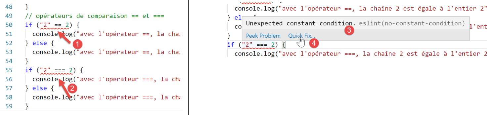
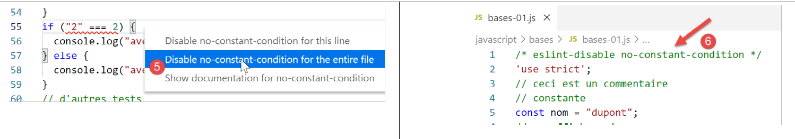
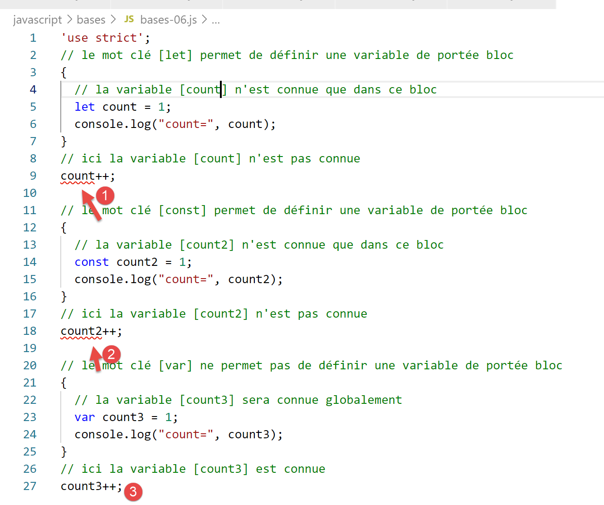

3. Los fundamentos de JavaScript
Nota: A partir de aquí, el término [JavaScript] se referirá siempre al estándar ECMAScript 6.
Dentro del proyecto JavaScript anterior, crea una carpeta llamada [bases]. Allí colocaremos los ejemplos de esta sección:

3.1. script [bases-01]
Para introducir los fundamentos de PHP7, utilizamos el siguiente código (ver párrafo enlazado):
<?php
// this is a comment
// variable used without being declared
$name = "dupont";
// a screen display
print "name=$name\n";
// an array with elements of different types
$array = array("one", "two", 3, 4);
// its number of elements
$n = count($array);
// a loop
for ($i = 0; $i < $n; $i++) {
print "array[$i] = $array[$i]\n";
}
// Initializing 2 variables with the contents of an array
list($string1, $string2) = array("string1", "string2");
// concatenating the two strings
$string3 = $string1 . $string2;
// display result
print "[$string1,$string2,$string3]\n";
// function usage
display($string1);
// the type of a variable can be known
displayType("n", $n);
displayType("string1", $string1);
displayType("array", $array);
// the type of a variable can change during execution
$n = "has changed";
displayType("n", $n);
// a function can return a result
$res1 = f1(4);
print "res1=$res1\n";
// a function can return an array of values
list($res1, $res2, $res3) = f2();
print "(res1,res2,res3)=[$res1,$res2,$res3]\n";
// we could have retrieved these values into an array
$t = f2();
for ($i = 0; $i < count($t); $i++) {
print "t[$i]=$t[$i]\n";
}
// some tests
for ($i = 0; $i < count($t); $i++) {
// display only strings
if (getType($t[$i]) === "string") {
print "t[$i]=$t[$i]\n";
}
}
// comparison operators == and ===
if("2"==2){
print "With the == operator, the string 2 is equal to the integer 2\n";
}else{
print "with the == operator, the string 2 is not equal to the integer 2\n";
}
if("2"===2){
print "With the === operator, the string 2 is equal to the integer 2\n";
}
else{
print "with the === operator, the string 2 is not equal to the integer 2\n";
}
// other tests
for ($i = 0; $i < count($t); $i++) {
// only displays integers >10
if (getType($t[$i]) === "integer" and $t[$i] > 10) {
print "t[$i] = $t[$i]\n";
}
}
// a while loop
$t = [8, 5, 0, -2, 3, 4];
$i = 0;
$sum = 0;
while ($i < count($t) and $t[$i] > 0) {
print "t[$i]=$t[$i]\n";
$sum += $t[$i]; //$sum=$sum+$t[$i]
$i++; //$i=$i+1
}//while
print "sum=$sum\n";
// end of program
exit;
//----------------------------------
function display($string) {
// display $string
print "string=$string\n";
}
//display
//----------------------------------
function displayType($name, $variable) {
// displays the type of $variable
print "type[variable $" . $name . "]=" . getType($variable) . "\n";
}
//displayType
//----------------------------------
function f1($param) {
// add 10 to $param
return $param + 10;
}
//----------------------------------
function f2() {
// returns 3 values
return array("one", 0, 100);
}
?>
Traducido a JavaScript, el resultado es el siguiente código:
'use strict';
// this is a comment
// constant
const name = "dupont";
// a screen display
console.log("name: ", name);
// an array with elements of different types
const array = ["one", "two", 3, 4];
// its number of elements
let n = array.length;
// a loop
for (let i = 0; i < n; i++) {
console.log("array[", i, "] = ", array[i]);
}
// Initializing 2 variables with the contents of an array
let [string1, string2] = ["string1", "string2"];
// concatenating the two strings
const string3 = string1 + string2;
// display result
console.log([string1, string2, string3]);
// using the function
display(string1);
// the type of a variable can be determined
displayType("n", n);
displayType("string1", string1);
displayType("array", array);
// the type of a variable can change during execution
n = "has changed";
afficheType("n", n);
// A function can return a result
let res1 = f1(4);
console.log("res1=", res1);
// a function can return an array of values
let res2, res3;
[res1, res2, res3] = f2();
console.log("(res1,res2,res3)=", [res1, res2, res3]);
// we could have retrieved these values in an array
let t = f2();
for (let i = 0; i < t.length; i++) {
console.log("t[i]=", t[i]);
}
// some tests
for (let i = 0; i < t.length; i++) {
// only displays strings
if (typeof (t[i]) === "string") {
console.log("t[i]=", t[i]);
}
}
// comparison operators == and ===
if ("2" == 2) {
console.log("With the == operator, the string 2 is equal to the integer 2");
} else {
console.log("with the == operator, the string 2 is not equal to the integer 2");
}
if ("2" === 2) {
console.log("With the === operator, the string 2 is equal to the integer 2");
} else {
console.log("With the === operator, the string '2' is not equal to the integer 2");
}
// other tests
for (let i = 0; i < t.length; i++) {
// displays only integers >10
if (typeof (t[i]) === "number" && Math.floor(t[i]) === t[i] && t[i] > 10) {
console.log("t[i]=", t[i]);
}
}
// a while loop
t = [8, 5, 0, -2, 3, 4];
let i = 0;
let sum = 0;
while (i < t.length && t[i] > 0) {
console.log("t[i]=", t[i]);
sum += t[i];
i++;
}
console.log("sum=", sum);
// program terminates because there is no more executable code
//display
//----------------------------------
function display(string) {
// displays string
console.log("string=", string);
}
//displayType
//----------------------------------
function displayType(name, variable) {
// displays the variable type
console.log("type[variable ", name, "]=", typeof (variable));
}
//----------------------------------
function f1(param) {
// adds 10 to param
return param + 10;
}
//----------------------------------
function f2() {
// returns 3 values
return ["one", 0, 100];
}
Discutimos las diferencias entre el código PHP y ECMAScript 6 con la [use strict] declaración (línea 1):
- La primera diferencia es que en ECMAScript, las variables se declaran utilizando las siguientes palabras clave:
- [let] para declarar una variable cuyo valor puede cambiar durante la ejecución del código;
- [const] para declarar una variable cuyo valor no cambiará (es decir, una constante) durante la ejecución del código;
- También puedes utilizar la [var] palabra clave en lugar de [let]. Esta era la palabra clave utilizada en ECMAScript 5. No la usaremos en este curso;
- línea 6: el método [console.log] puede mostrar todo tipo de datos: cadenas, números, booleanos, matrices y objetos. El método PHP [print] no puede mostrar arrays y objetos de forma nativa. En la expresión [console.log] , [console] es un objeto y [log] es un método de ese objeto;
- línea 8: Las matrices de JavaScript son objetos referenciados por un puntero. Cuando escribimos:
const array = ["one", "two", 3, 4];
la variable [array] es un puntero al literal array ["uno", "dos", 3, 4]. La modificación del contenido de la matriz no cambia su puntero. Por lo tanto, un array se declara más a menudo con la [const] palabra clave. En PHP, un array no es referenciado por un puntero. Es un valor literal;
- Línea 12: La variable de bucle [i] se declara (let) dentro del bucle. La palabra clave [let] tiene alcance de bloque (código entre llaves). Por lo tanto, la variable [i] en la línea 12 sólo es accesible dentro del bucle;
- Línea 18: El operador de concatenación de cadenas es el operador + en JavaScript y el operador . en PHP. Una característica distintiva de este operador es que tiene precedencia sobre el operador de suma +. Así:
- en PHP, '1' + 2 da el número 3;
- en JavaScript, '1'+2 produce la cadena '12';
- línea 20: [console.log] puede mostrar matrices;
- línea 82: en JavaScript, no es posible especificar el tipo de los parámetros de una función;
- línea 91: el [typeof] operador permite determinar el tipo de un elemento de datos. Existen cuatro tipos: número, cadena, booleano y objeto. Tenga en cuenta que en JavaScript no hay [integer] tipo o [array] tipo. Como se ha mencionado, las matrices se manejan mediante punteros y entran en la categoría de objetos;
- líneas 50-59: Como en PHP, JavaScript tiene dos operadores de comparación, == y '===', con el mismo significado que en PHP. ESLint suele marcar el operador == como un error potencial. Usaremos consistentemente el operador '===';
- línea 79: podríamos haber incluido la [return] declaración, pero ESLint emite una advertencia de que [return] sólo debe utilizarse dentro de una función;
Ejecutamos este código:

Resultados de la ejecución:
[Running] C:\myprograms\laragon-lite\bin\nodejs\node-v10\node.exe "c:\Temp\19-09-01\javascript\bases\bases-01.js"
name: dupont
array[ 0 ] = one
array[ 1 ] = two
array[ 2 ] = 3
array[ 3 ] = 4
[ 'string1', 'string2', 'string1string2' ]
string = string1
type[variable n] = number
type[variable string1] = string
type[variable array] = object
type[variable n] = string
res1 = 14
(res1, res2, res3) = ['one', 0, 100]
t[0] = one
t[1] = 0
t[2] = 100
t[0] = one
With the == operator, the string 2 is equal to the integer 2
With the === operator, string 2 is not equal to the integer 2
t[ 2 ]= 100
t[ 0 ]= 8
t[ 1 ]= 5
sum= 13
[Done] exited with code=0 in 0.316 seconds
En el código escrito, ESLint informa de dos errores:

- Cuando se pasa el ratón por encima de la línea roja de advertencia, se ve el mensaje de error [3]. Aquí, ESLint no reconoce que se están comparando dos constantes. Uno de los dos operandos debería ser una variable;
- en [4], una [Solución rápida] opción le permite descartar la advertencia si decide no corregir el error;

- en [5], puede desactivar la advertencia para la línea actual o para todo el archivo. Aquí elegimos esta última opción. La línea [6] se genera entonces al principio del fichero;
3.2. script [bases-02]
El [bases-02] script demuestra el uso de las [let] y [const] palabras clave:
'use strict';
// To initialize a variable, use let or const
// let for variables
let x = 4;
x++;
console.log(x);
// const for constants
const y = 10;
x += y;
// not allowed
y++;
- La línea 11 provoca un error en tiempo de ejecución [1-2]. Es marcado por ESLint antes de la ejecución [3]:

3.3. script [bases-03]
El script [bases-03] examina el alcance de las variables en JavaScript:
'use strict';
// variable scope
let count = 1;
function doSomething() {
// count is known here
console.log("count=", count);
}
// call
doSomething();
- la variable [count] declarada fuera de la función [doSomething] es sin embargo conocida dentro de esta función. Esta es una diferencia fundamental con respecto a PHP;
Ejecución
[Running] C:\myprograms\laragon-lite\bin\nodejs\node-v10\node.exe "c:\Temp\19-09-01\javascript\bases\bases-03.js"
count= 1
[Done] exited with code=0 in 0.3 seconds
3.4. script [bases-04]
Una variable local oculta una variable global con el mismo nombre:
'use strict';
// variable scope
const count = 1;
function doSomething() {
// the local variable hides the global variable
const count = 2;
console.log("count inside function=", count);
}
// global variable
console.log("count outside function=", count);
// local variable
doSomething();
Ejecución
[Running] C:\myprograms\laragon-lite\bin\nodejs\node-v10\node.exe "c:\Temp\19-09-01\javascript\bases\bases-04.js"
count outside function= 1
count inside function= 2
[Done] exited with code=0 in 0.246 seconds
3.5. script [bases-05]
Una variable definida dentro de una función no se conoce fuera de ella:
'use strict';
// variable scope
function doSomething() {
// variable local to the function
const count = 2;
console.log("count inside function=", count);
}
// Here, `count` is not defined
console.log("count outside function=", count);
doSomething();
ESLint informa de un error en la línea 9:

3.6. script [bases-06]
Las palabras clave [let] y [const] definen variables con [block] ámbito (código entre llaves), pero no la palabra clave [var]:
'use strict';
// the [let] keyword allows you to define a block-scoped variable
{
// the variable [count] is only known within this block
let count = 1;
console.log("count=", count);
}
// Here, the variable [count] is not known
count++;
// the keyword [const] allows you to define a block-scoped variable
{
// the variable [count2] is only known within this block
const count2 = 1;
console.log("count=", count2);
}
// here the variable [count2] is not known
count2++;
// the keyword [var] does not allow defining a block-scoped variable
{
// the variable [count3] will be known globally
var count3 = 1;
console.log("count=", count3);
}
// here the variable [count3] is known
count3++;
Comentarios
- línea 5: la variable [count] sólo se conoce dentro del bloque de código en el que se declara (líneas 3-7);
- línea 14: la constante [count2] sólo se conoce dentro del bloque de código en el que se declara (líneas 12-16);
- línea 23: la variable [count3] se conoce fuera del bloque de código en el que se declara (líneas 21-25);
ESLint informa de los siguientes errores:

Por estas razones relacionadas con el ámbito de los bloques, a partir de ahora sólo utilizaremos las palabras clave [let] y [const] .
3.7. script [bases-07]
Tipos de datos en JavaScript:
'use strict';
// JavaScript data types
const var1 = 10;
const var2 = "abc";
const var3 = true;
const var4 = [1, 2, 3];
const var5 = {
name: 'axèle'
};
const var6 = function () {
return +3;
}
// Displaying types
console.log("typeof(var1)=", typeof(var1));
console.log("typeof(var2)=", typeof(var2));
console.log("typeof(var3)=", typeof (var3));
console.log("typeof(var4)=", typeof (var4));
console.log("typeof(var5)=", typeof(var5));
console.log("typeof(var6)=", typeof(var6));
Ejecución
[Running] C:\myprograms\laragon-lite\bin\nodejs\node-v10\node.exe "c:\Temp\19-09-01\javascript\bases\bases-07.js"
typeof(var1)= number
typeof(var2)= string
typeof(var3) = boolean
typeof(var4) = object
typeof(var5) = object
typeof(var6) = function
[Done] exited with code=0 in 0.26 seconds
Comentarios
- línea 7 (código): un array es un objeto. Como tal, [var4] es un puntero al array, no el array en sí;
- línea 8 (código): [var5] es un puntero a un objeto literal. Veremos que los objetos literales de JavaScript se parecen mucho a las instancias de clase de PHP. Ellos también son referenciados a través de punteros;
- línea 11 (código): una variable puede ser de tipo [función] (línea 7 de los resultados);
3.8. script [bases-08]
Este script demuestra las posibles conversiones de tipo en JavaScript.
'use strict';
// implicit type conversions
// type --> bool
console.log("---------------[Implicit conversion to a boolean]------------------------------");
showBool("abcd");
showBool("");
showBool([1, 2, 3]);
showBool([]);
showBool(null);
showBool(0.0);
showBool(0);
showBool(4.6);
showBool({});
showBool(undefined);
function showBool(data) {
// The conversion of data to a boolean is done automatically in the following test
console.log("[data=", data, "], [type(data)]=", typeof (data), "[boolean value(data)]=", data ? true : false);
}
// Implicit type conversions to a numeric type
console.log("---------------[Implicit conversion to a number]------------------------------");
showNumber("12");
showNumber("45.67");
showNumber("abcd");
function showNumber(data) {
// data + 1 doesn't work because JavaScript performs string concatenation instead of addition
const number = data * 1;
console.log("[data=", data, "], [type(data)]=", typeof (data), "[number]=", number, "[type(number)]=", typeof (number));
}
// Explicit type conversions to a boolean
console.log("---------------[Explicit conversion to a boolean]------------------------------");
showBool2("abcd");
showBool2("");
showBool2([1, 2, 3]);
showBool2([]);
showBool2(null);
showBool2(0.0);
showBool2(0);
showBool2(4.6);
showBool2({});
showBool2(undefined);
function showBool2(data) {
// The conversion of data to a boolean is done explicitly in the following test
console.log("[", data, "], [type(data)]=", typeof (data), "[boolean value(data)]=", Boolean(data));
}
// Explicit type conversions to Number
console.log("---------------[Explicit conversion to a number]------------------------------");
showNumber2("12.45");
showNumber2(67.8);
showNumber2(true);
showNumber2(null);
function showNumber2(data) {
const number = Number(data);
console.log("[data=", data, "], [type(data)]=", typeof (data), "[number]=", number, "[type(number)]=", typeof (number));
}
// to String
console.log("---------------[Explicit conversion to a string]------------------------------");
showString(5);
showString(6.7);
showString(false);
showString(null);
function showString(data) {
const string = String(data);
console.log("[data=", data, "], [type(data)]=", typeof (data), "[string]=", string, "[type(string)]=", typeof (string));
}
// some unexpected implicit conversions
console.log("---------------[Other cases]------------------------------");
const string1 = '1000.78';
// default string concatenation
const data1 = string1 + 1.034;
console.log("data1=", data1, "type=", typeof (data1));
const data2 = 1.034 + string1;
console.log("data2=", data2, "type=", typeof (data2));
// Explicit conversion to number
const data3 = Number(string1) + 1.034;
console.log("data3=", data3, "type=", typeof (data3));
// true is converted to the number 1
const data4 = true * 1.18;
console.log("data4=", data4, "type=", typeof (data4));
// false is converted to the number 0
const data5 = false * 1.18;
console.log("data5=", data5, "type=", typeof (data5));
Ejecución
[Running] C:\myprograms\laragon-lite\bin\nodejs\node-v10\node.exe "c:\Data\st-2019\dev\es6\javascript\bases\bases-08.js"
---------------[Implicit conversion to a boolean]------------------------------
[data= abcd ], [type(data)]= string [boolean value(data)]= true
[data= ], [type(data)]= string [boolean value(data)]= false
[data= [ 1, 2, 3 ] ], [type(data)]= object [boolean value(data)]= true
[data= [] ], [type(data)]= object [boolean value(data)]= true
[data= null ], [type(data)]= object [boolean value(data)]= false
[data= 0 ], [type(data)]= number [boolean value(data)]= false
[data= 0 ], [type(data)]= number [boolean value(data)]= false
[data= 4.6 ], [type(data)]= number [boolean value(data)]= true
[data= {} ], [type(data)]= object [boolean value(data)]= true
[data= undefined ], [type(data)]= undefined [boolean value(data)]= false
---------------[Implicit conversion to a number]------------------------------
[data= 12 ], [type(data)]= string [number]= 12 [type(number)]= number
[data= 45.67 ], [type(data)]= string [number]= 45.67 [type(number)]= number
[data= abcd ], [type(data)]= string [number]= NaN [type(number)]= number
---------------[Explicit conversion to a Boolean]------------------------------
[ abcd ], [type(data)]= string [boolean value(data)]= true
[ ], [type(data)]= string [boolean value(data)]= false
[ [ 1, 2, 3 ] ], [type(data)]= object [boolean value(data)]= true
[ [] ], [type(data)]= object [boolean value(data)]= true
[ null ], [type(data)]= object [boolean value(data)]= false
[ 0 ], [type(data)]= number [boolean value(data)]= false
[ 0 ], [type(data)]= number [boolean value(data)]= false
[ 4.6 ], [type(data)]= number [boolean value(data)]= true
[ {} ], [type(data)]= object [boolean value(data)]= true
[undefined], [type(data)]= undefined [boolean value(data)]= false
---------------[Explicit conversion to a number]------------------------------
[data= 12.45 ], [type(data)]= string [number]= 12.45 [type(number)]= number
[data= 67.8 ], [type(data)]= number [number]= 67.8 [type(number)]= number
[data= true ], [type(data)]= boolean [number]= 1 [type(number)]= number
[data= null ], [type(data)]= object [number]= 0 [type(number)]= number
---------------[Explicit conversion to a string]------------------------------
[data= 5 ], [type(data)]= number [string]= 5 [type(string)]= string
[data= 6.7 ], [type(data)]= number [string]= 6.7 [type(string)]= string
[data= false ], [type(data)]= boolean [string]= false [type(string)]= string
[data= null ], [type(data)]= object [string]= null [type(string)]= string
---------------[Other cases]------------------------------
data1= 1000.781.034 type= string
data2= 1.0341000.78 type= string
data3= 1001.814 type= number
data4= 1.18 type= number
data5= 0 type= number